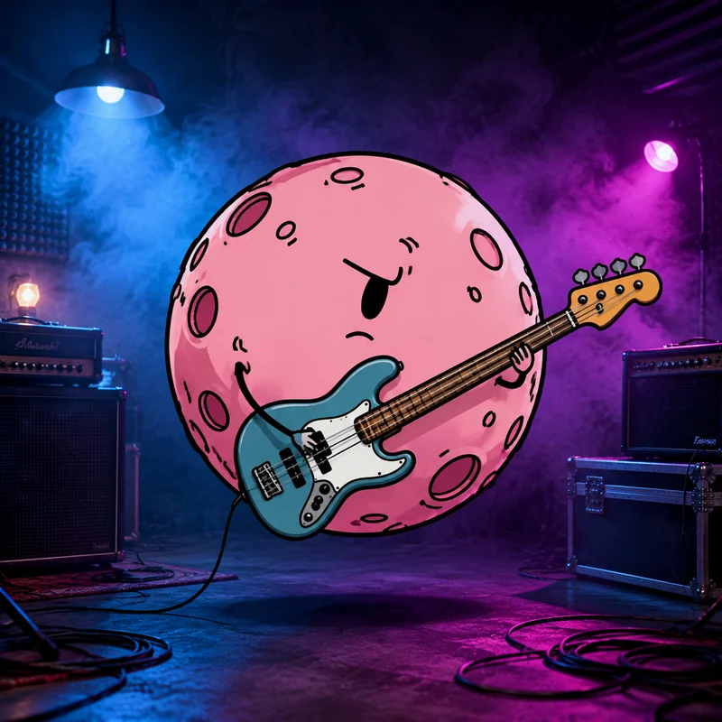
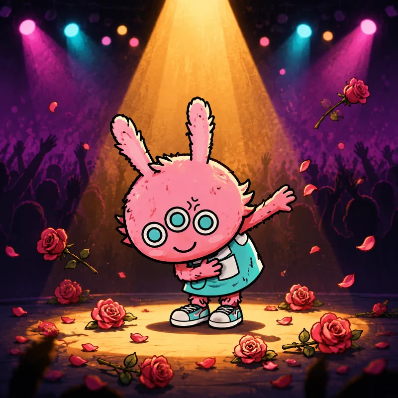
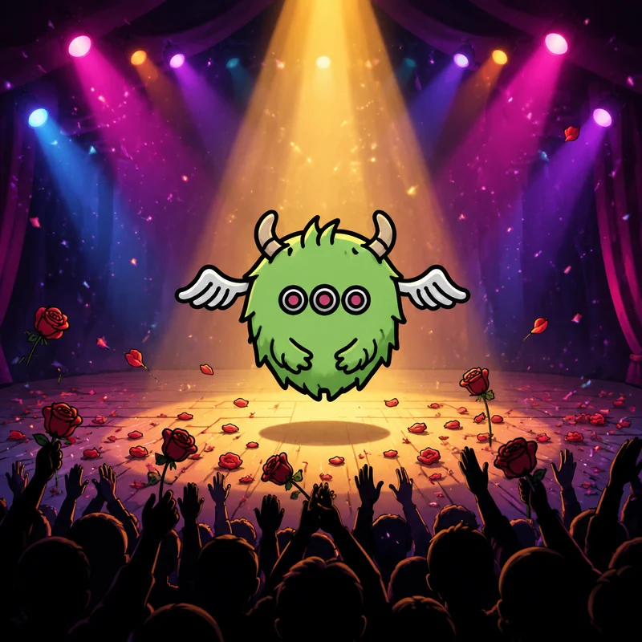

Collections系列商品系列商品คอลเลกชันコレクション
Furi CollectionsFURI 系列商品FURI 系列商品คอลเลกชัน FuriFuri コレクション
A character IP earns the right to sell things by being worth visiting first. So this page shows the plan and labels it honestly.一個角色 IP 要先值得被造訪，才有資格賣東西。所以這一頁展示計畫，並且誠實標示。一个角色 IP 要先值得被造访，才有资格卖东西。所以这一页展示计划，并且诚实标示。IP ตัวละครต้องมีค่าพอให้คนอยากมาดูก่อน จึงจะขายของได้ หน้านี้จึงแสดงแผนและติดป้ายอย่างตรงไปตรงมาキャラクターIPは、まず訪れる価値があることで、物を売る資格を得ます。だからこのページは計画を示し、正直にラベルを貼ります。
Art Toys藝術玩具艺术玩具อาร์ตทอยアートトイ
Vinyl and resin figures built from the same six silhouettes, with the outline rule intact at any scale.以同樣六個剪影製作的搪膠與樹脂公仔，無論尺寸大小都保持同一條輪廓線規則。以同样六个剪影制作的搪胶与树脂公仔，无论尺寸大小都保持同一条轮廓线规则。ฟิกเกอร์ไวนิลและเรซินที่สร้างจากเงาทั้งหกแบบเดียวกัน โดยกฎเส้นรอบยังครบไม่ว่าจะขยายเท่าไหร่同じ六つのシルエットから作るビニールとレジンのフィギュア。どんな尺でも輪廓線のルールはそのまま。
Plush毛絨毛绒ตุ๊กตาปลอมヌイグルミ
Soft plush built to be held, not displayed. Boxo is heavier than he looks, on purpose.用來抱而不是用來展示的柔軟毛絨。盒子比看起來重，這是刻意的。用来抱而不是用来展示的柔软毛绒。盒子看起来重，这是刻意的。ตุ๊กตานุ่มที่ทำมาเพื่อให้กอด ไม่ใช่เพื่อตั้งโชว์ Boxoหนักกว่าที่ดู และตั้งใจให้เป็นแบบนั้น飾るためではなく、抱くための柔らかいヌイグルミ。Boxoは見た目より重い。意図的に。
Fashion服飾服饰แฟชั่นファッション
Apparel and accessories that use the six symbols rather than the six faces.使用六個符號、而不是六張臉的服裝與配件。使用六个符号、而不是六张脸的服装与配件。เสื้อผ้าและเครื่องประดับที่ใช้สัญลักษณ์ทั้งหก แทนที่ใบหน้าทั้งหก六つの顔ではなく、六つのシンボルを使う服とアクセサリー。
Stationery文具文具เครื่องเขียน文房具
Notebooks, pens and desk objects, in the flat-fill palette.筆記本、筆與桌面物件，使用平塗色票。笔记本、笔与桌面物件，使用平涂色票。สมุด ปากกา และของบนโต๊ะ ในโทนสีแบบลงสีทึบノート、ペン、機辺の小物。塗りつぶしのパレットで。
Drinkware飲具饮具ภาชนะเครื่องดื่มドリンクウェア
Bottles, cups and cans. Bubi is the obvious one. We are trying not to do the obvious one.水瓶、杯子與罐裝。布比是最顯而易見的選擇，我們正試著不要做那個顯而易見的選擇。水瓶、杯子与罐装。布比是最显而易见的选择，我们正试着不要做那个显而易见的选择。ขวด แก้ว และกระป๋อง Bubiคือตัวที่ชัดเจนที่สุด และเรากำลังพยายามไม่ทำสิ่งที่ชัดเจนนั้นボトル、カップ、缶。Bubiが一番分かりやすい。あえてそれを避けている。
Lifestyle生活生活ไลฟ์สไตล์ライフスタイル
Home and travel objects for people who have already bought the plush.給已經買過毛絨的人用的家居與旅行物件。给已经买过毛绒的人用的家居与旅行物件。ของใช้ในบ้านและการเดินทาง สำหรับคนที่ซื้อตุ๊กตาไปแล้วヌイグルミをもう買った人のための、家と旅のもの。
Digital Collectibles數位收藏数字收藏สิ่งสะสมดิจิตัลデジタルコレクタブル
Digital assets tied to the Emotion Lab results. No blockchain, no speculation — just something to keep.與情緒實驗室結果連動的數位資產。沒有區塊鏈，沒有炒作，只是留個紀念。与情绪实验室结果连动的数字资产。没有区块链，没有炒作，只是留个纪念。สินค้าดิจิตัลที่ผูกกับผลลัพธ์จากห้องแล็บอารมณ์ ไม่มีบล็อกเชน ไม่มีการเก็งกำไร — เพียงแค่เก็บไว้เป็นที่ระลึก感情ラボの結果と結びつくデジタル資産。ブロックチェーンも投機もなし—ただ残しておくもの。
Collaboration Series聯名系列联名系列ซีรีส์คอลแลบコラボシリーズ
Reserved for confirmed partners only. Nothing is listed here until it is signed.僅保留給已確認的合作夥伴。在簽約之前，這裡不會列出任何東西。仅保留给已确认的合作伙伴。在签约之前，这里不会列出任何东西。สงวนไว้สำหรับพาร์ทเนอร์ที่ยืนยันแล้วเท่านั้น จะไม่มีอะไรลงที่นี่จนกว่าจะเซ็นสัญญา確定したパートナーのためだけの枠。署名するまで、ここには何も並ばない。
How the line is built產品線如何組成产品线如何组成ไลน์สินค้าถูกสร้างอย่างไรラインの作り方
One outline, any size一條輪廓線，任何尺寸一条轮廓线，任何尺寸เส้นขอบเดียว ทุกขนาด1本の輪郭、どんなサイズでも
The guardians are supplied as original vector artwork, so the same figure holds at 16 pixels on a sticker and at three metres on an installation. That is what makes a range possible without redrawing anything.守護者以原創向量素材提供，所以同一個造型在 16 像素的貼圖上和三公尺的裝置上都成立。這就是為什麼不需要重畫任何東西，就能做出一整個系列。守护者以原创矢量素材提供，所以同一个造型在 16 像素的贴图上和三米的装置上都成立。这就是为什么不需要重画任何东西，就能做出一整个系列。ผู้พิทักษ์จัดทำเป็นงานเวกเตอร์ต้นฉบับ รูปเดิมจึงใช้ได้ทั้งกับสติกเกอร์ 16 พิกเซลและงานติดตั้งสามเมตร นี่คือเหตุผลที่ทำทั้งคอลเลกชันได้โดยไม่ต้องวาดใหม่守護者はオリジナルのベクター素材でお届けします。16ピクセルのステッカーでも3メートルのインスタレーションでも同じ姿が保てるので、描き直さずにシリーズ展開できます。
One black outline一條黑輪廓線一条黑轮廓线เส้นขอบดำหนึ่งเส้น黒い輪郭ひとつ
Every shape carries one uniform black outline and no second line, which is the rule the supplied artwork already follows at any scale.每個形狀都只有一條統一的黑色輪廓線，沒有第二條線 —— 這是原始素材在任何尺寸下都已經遵守的規則。每个形状都只有一条统一的黑色轮廓线，没有第二条线 —— 这是原始素材在任何尺寸下都已经遵守的规则。ทุกรูปมีเส้นขอบดำเส้นเดียวสม่ำเสมอ ไม่มีเส้นที่สอง ซึ่งเป็นกฎที่งานต้นฉบับทำอยู่แล้วในทุกขนาดすべての形は均一な黒い輪郭をひとつだけ持ち、二本目の線はありません。原本のアートがどのサイズでも守っているルールです。
Flat fills only只有平塗只有平涂ใช้สีทึบเท่านั้นベタ塗りのみ
No gradients, no shading. Which is also why the art survives being printed on cheap material.沒有漸層、沒有陰影。這也是為什麼這些圖印在便宜材質上依然成立。没有渐变、没有阴影。这也是为什么这些图印在便宜材质上依然成立。ไม่มีไล่สี ไม่มีเงา นี่ก็เป็นเหตุผลที่งานศิลป์ยังดูดีเมื่อพิมพ์บนวัสดุราคาถูกグラデーションも陰影もなし。だからこそ、安い素材に印刷してもアートが持ちこたえます。
Vector original向量原稿矢量原稿เวกเตอร์ต้นฉบับベクター原本
The artwork is supplied as vector originals, so a new export cannot change how a character looks between products.素材以向量原稿提供，所以重新匯出也不會改變角色在不同產品之間的樣貌。素材以矢量原稿提供，所以重新导出也不会改变角色在不同产品之间的样貌。งานศิลป์จัดทำเป็นเวกเตอร์ต้นฉบับ การ export ใหม่จึงไม่เปลี่ยนหน้าตาตัวละครระหว่างสินค้าアートはベクター原本で提供されるため、書き出し直しても商品ごとにキャラクターの見た目が変わることはありません。
On stage舞台上舞台上บนเวทีステージ上
The guardians, live守護者現場演出守护者现场演出ผู้พิทักษ์ในงานแสดงสด守護者たちのライブ
Official FURI MONSTER stage artwork. Live events and music are the part of the range that carries the characters at scale.官方 FURI MONSTER 舞台素材。現場活動與音樂是系列中能把角色放大呈現的部分。官方 FURI MONSTER 舞台素材。现场活动与音乐是系列中能把角色放大呈现的部分。งานอาร์ตเวที FURI MONSTER ต้นฉบับ งานแสดงสดและดนตรีคือส่วนของคอลเลกชันที่พาตัวละครไปในวงกว้าง公式 FURI MONSTER ステージアート。ライブと音楽は、キャラクターを大きな規模で展開できる部分です。



Shop網店网店ร้านค้าショップ
Order the range訂購系列订购系列สั่งซื้อคอลเลกชันコレクションを注文
The cart on this site is real — items stay in it as you move between pages, and it is stored only in your own browser. What is not connected yet is payment.本網站的購物車是真實的 —— 您在不同頁面之間移動時，商品會保留在車內，而且只儲存在您自己的瀏覽器。尚未連接的是付款。本网站的购物车是真实的 —— 您在不同页面之间移动时，商品会保留在车内，而且只存储在您自己的浏览器。尚未连接的是付款。ตะกร้าบนเว็บนี้ใช้งานได้จริง สินค้าคงอยู่ในตะกร้าขณะเปลี่ยนหน้า และเก็บไว้ในเบราว์เซอร์ของคุณเท่านั้น สิ่งที่ยังไม่ได้เชื่อมต่อคือการชำระเงินこのサイトのカートは本物です。ページを移動しても商品は残り、保存先はお使いのブラウザのみ。まだ接続していないのは決済です。